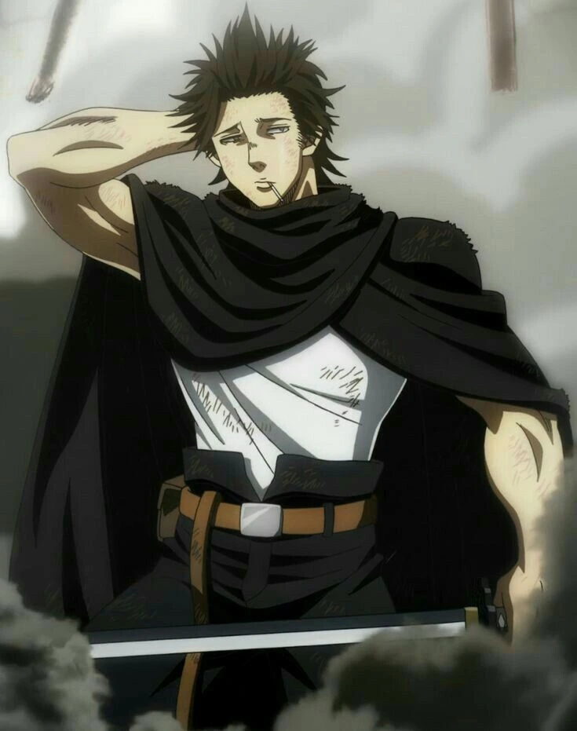
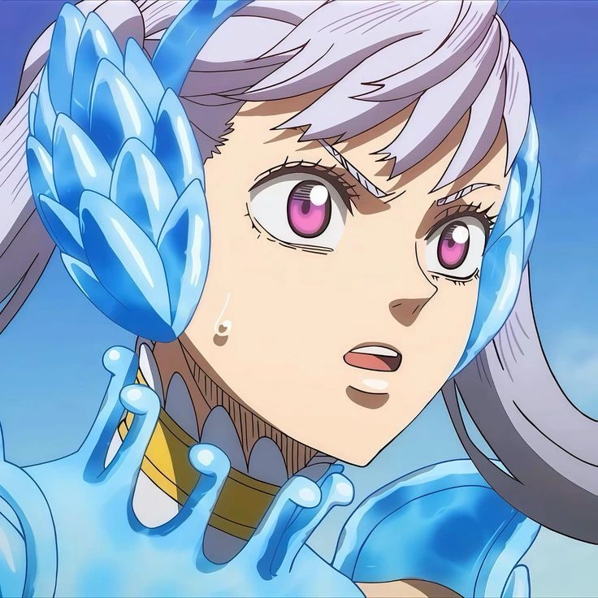
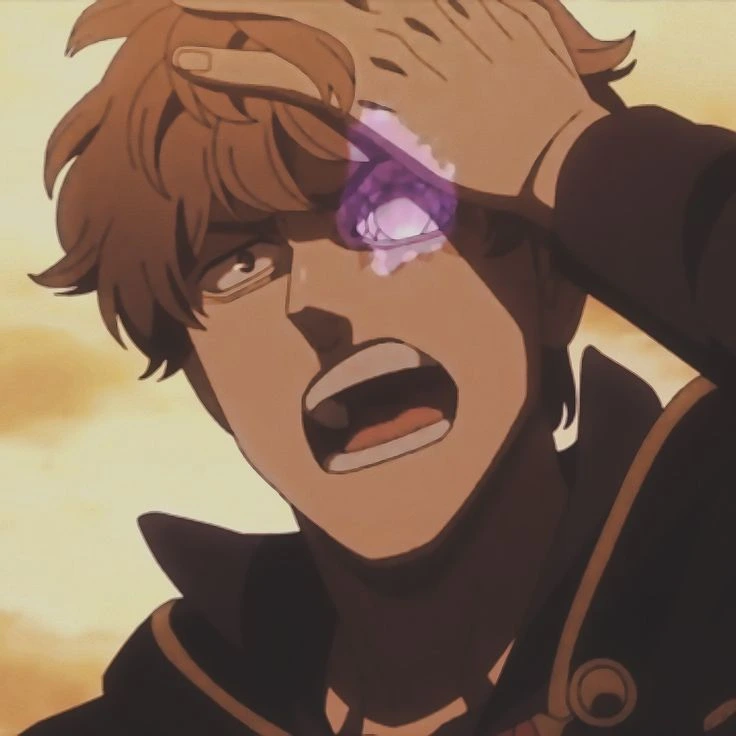
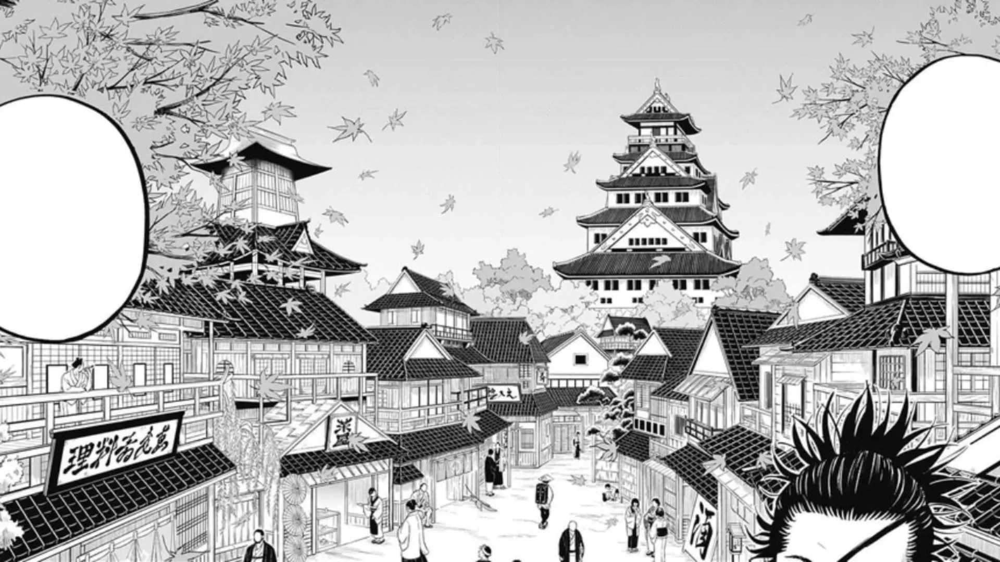

Yami Sukehiro is the battle-hardened and often unpredictable captain of the Black Bulls. Originally from the distant land of Hino Country, he became one of the Clover Kingdom's strongest Magic Knights, known for his Dark Magic and philosophy of "surpassing limits".

Black Bulls Squad
Asta

Noelle Silva

Magna Swing
Luck Voltia
Charmy Pappitson
Vanessa Enoteca

Gauche Adlai
Grey
Henry Legolant

Gordon Agrippa

Zora Ideale

Nacht Faust
Secre Swallowtail
Yami's Homeland: Hino Country

Hino Country is a distant land in the Black Clover world, inspired by traditional Japanese culture.
It is known for its warrior clans and samurai-like magic users. Yami originally came from this country before
he was stranded in the Clover Kingdom and began his journey as a Magic Knight.